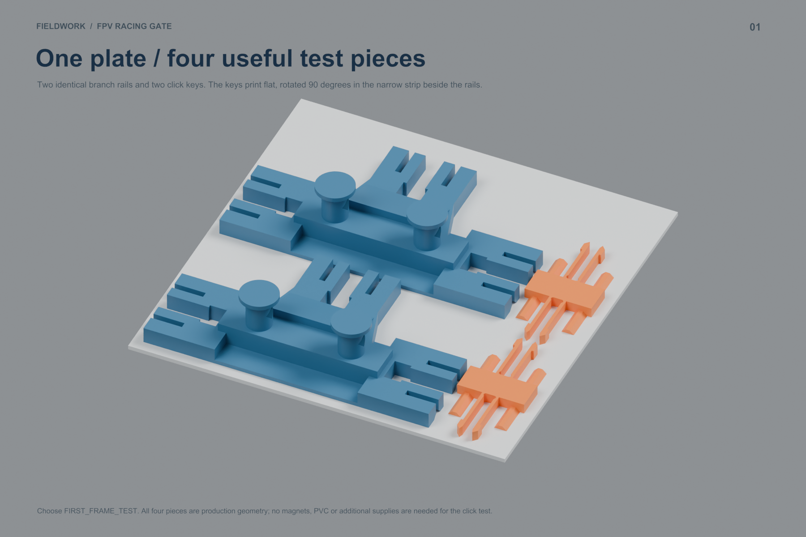
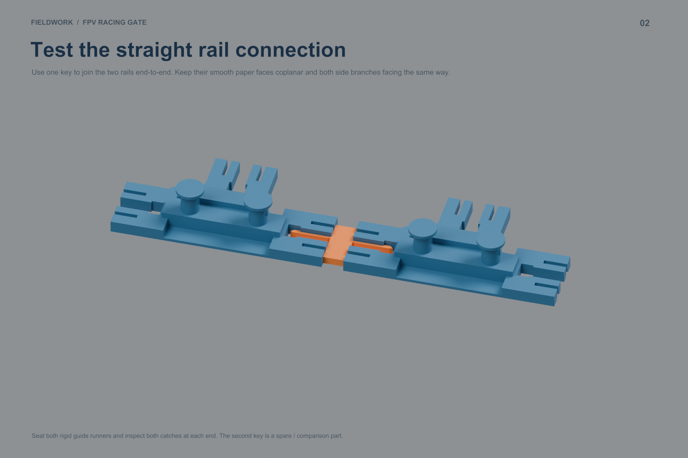
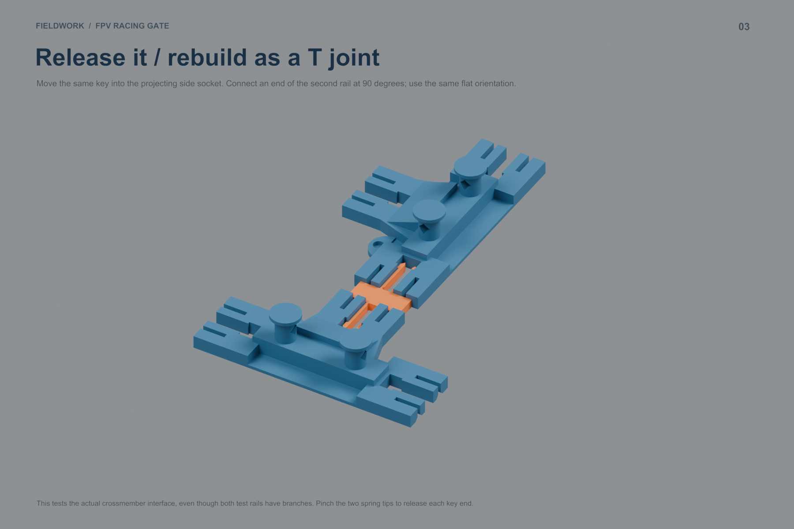
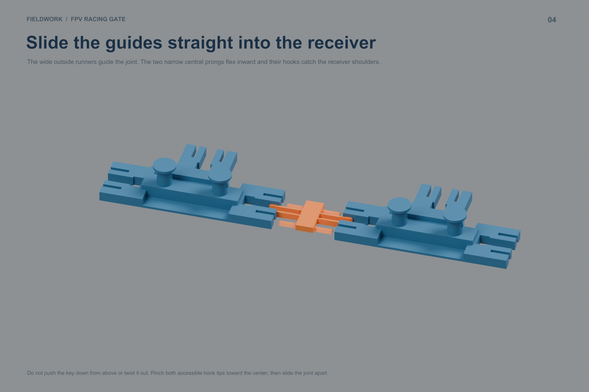

Optional five-piece version with one paper pad — 81.63 g / 3 h 24 min. Choose one file, not both.
Assembly and test PDF · Blender scenes · Detailed guide · Download kit
PETG, 0.4 mm nozzle, 0.20 mm layers, four walls, 20% infill, no supports or brim, print by layer. Supplied flat orientations, 100% scale. All pieces fit with at least 5 mm bed margin and slice without warnings. No printer job has been submitted.




All three part meshes match the current production geometry. Frame-side magnet holders retain the 0.4 mm plastic skin; front PAPER_PAD parts are optional. The peaked sleeve remains unchanged. Physical fit and durability are awaiting this test.